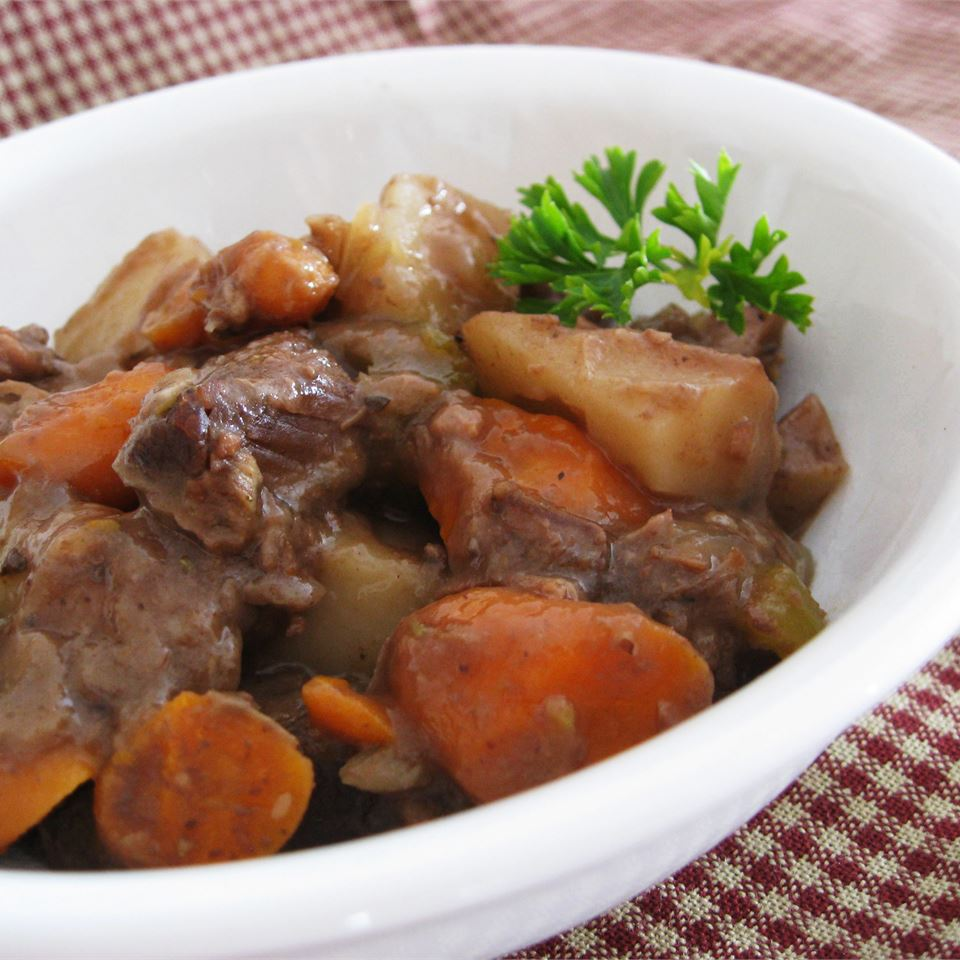

Slow Cook Beef Stew

Description
A recipe for a hearty and filing slowed cooked beef stew. Perfect for busy people
6 servings
Ingredients
- 2 pounds beef stew meat, cut into 1-inch pieces
- 1/4 cup all-purpose flour
- 1/2 teaspoon salt
- 1/2 teapsoon ground black pepper
- 1 clove garlic, minced
- 1 bay leaf
- 1 teaspoon paprika
- 1 teaspoon Worcestershire sauce
- 1 onion, chopped
- 1 and 1/2 cup beef broth
- 3 potatoes, diced
- 4 carrots, sliced
- 1 stalk celery, chopped
Steps
- Place meat in slow cooker. In a small bowl mix together the flour, salt, and pepper; pour over meat, and stir to coat meat with flour mixture. Stir in the garlic, bay leaf, paprika, Worcestershire sauce, onion, beef broth, potatoes, carrots, and celery.
- Cover, and cook on Low setting for 10 to 12 hours, or on High setting for 4 to 6 hours.